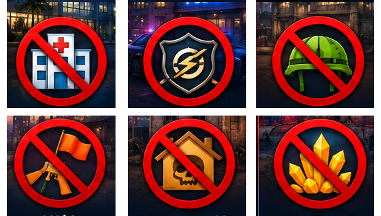
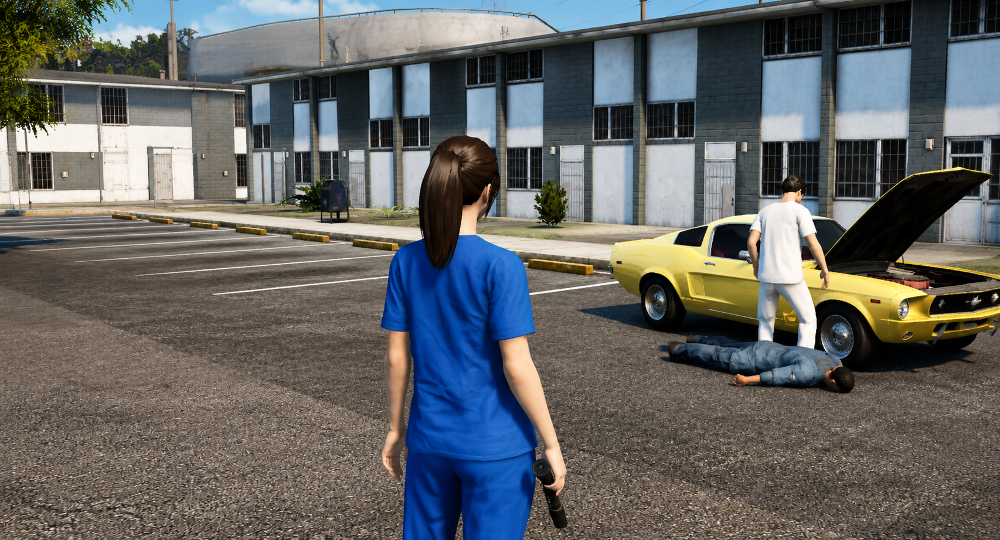
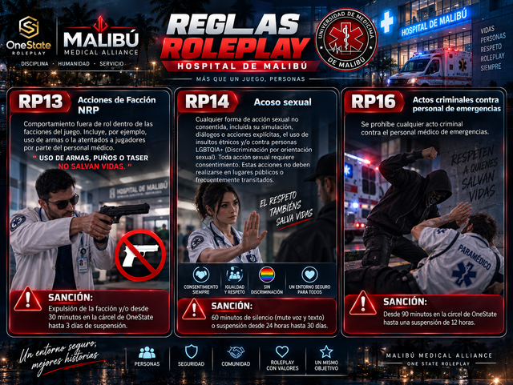
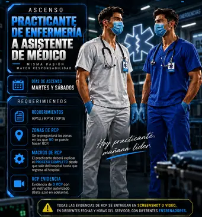

01
/flobby Solicito permiso para salir a hacer RCP con un instructor.
Misma pasión · Mayor responsabilidad
Todas las evidencias de RCP se entregan en SCREENSHOT o VIDEO, en diferentes fechas y horas del servidor, con diferentes ENTRENADORES.
Explicar el proceso con las macros, desde que sale del hospital hasta que regresa.

Se le preguntará las zonas en las que NO se puede hacer RCP.

Evidencia de 3 RCP con un instructor autorizado (bata azul en adelante).
Conocer las reglas de roleplay RP13, RP14 y RP16 y sus sanciones.
El practicante deberá explicar el proceso completo de RCP, desde que sale del hospital hasta que regresa, usando las macros en orden.
Se le preguntará las zonas en las que NO se puede hacer RCP. Tocá la imagen para verla en grande.
Lugares donde no se puede realizar RCP.

Ubicá en el mapa las zonas restringidas y sus alrededores.
Se debe presentar evidencia de 3 RCP realizados junto a un instructor autorizado (bata azul en adelante).

Ejemplo · tocá para verla en grande.Conocer las reglas y sus sanciones. Tocá la imagen para verla en grande.

Reglas de roleplay y sanciones.

Resumen de los requisitos para bata azul.